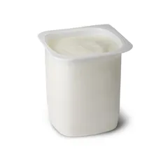

Romain SIEURIN
Cuisiner c'est la vie !
Novembre 2022
Smoothie aux fruits rouges
INGRÉDIENTS POUR 4 PERSONNES
200g de fruits rouges

1 yaourt vanille ou nature
20cl de fruits
1 glace vanille (facultatif)
PRÉPARATION
Dans un premier temps, verser un verre de
jus de fruits
dans un blender, puis ajouter le
yaourt
et la
glace
puis mixer.
Enfin, ajouter les
fruits rouges
selon votre goût et re-mixer.
Smoothie frais et délicieux assuré !
ALTERNATIVE VIDEO